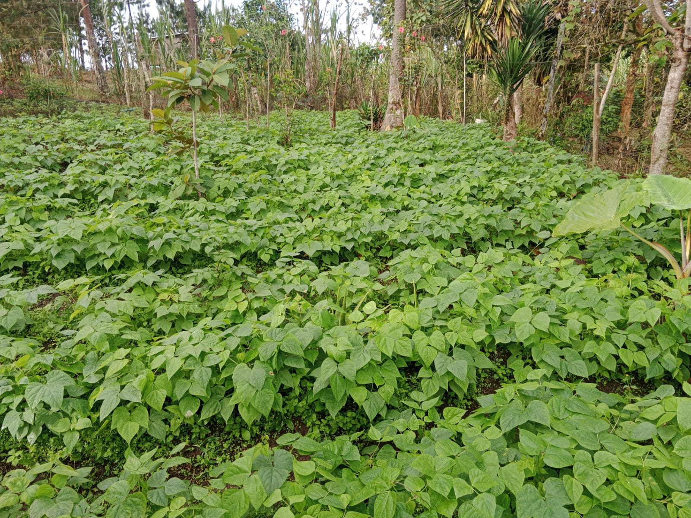
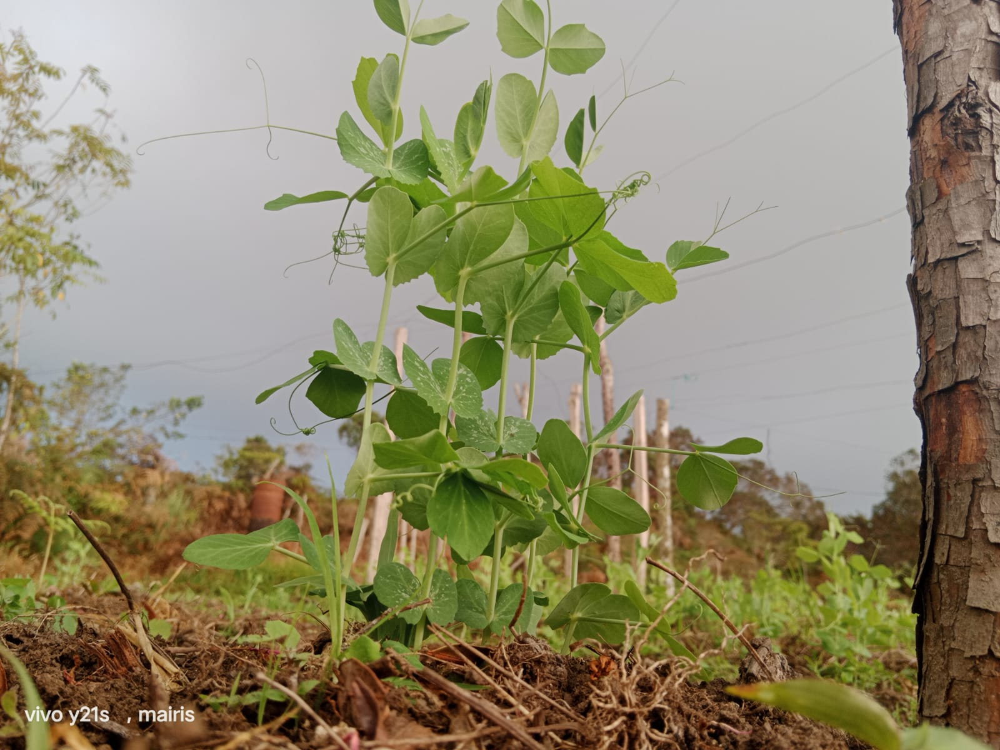
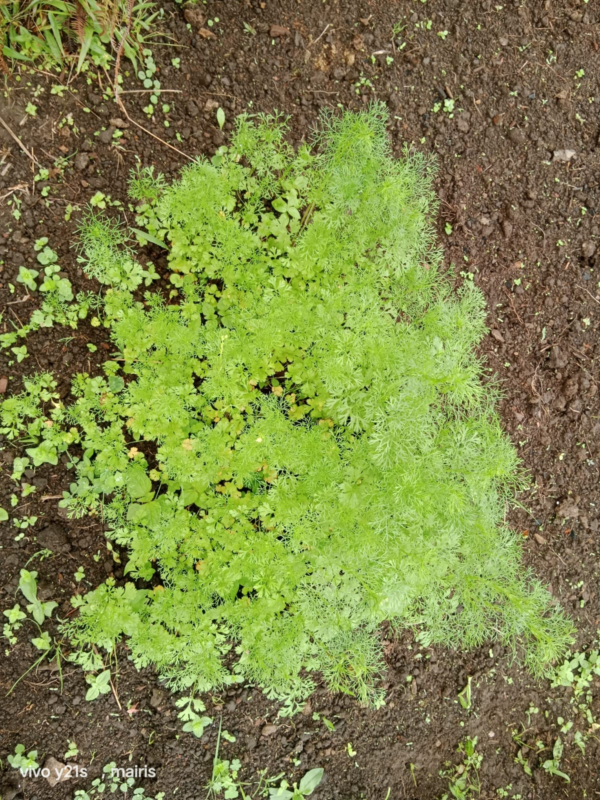
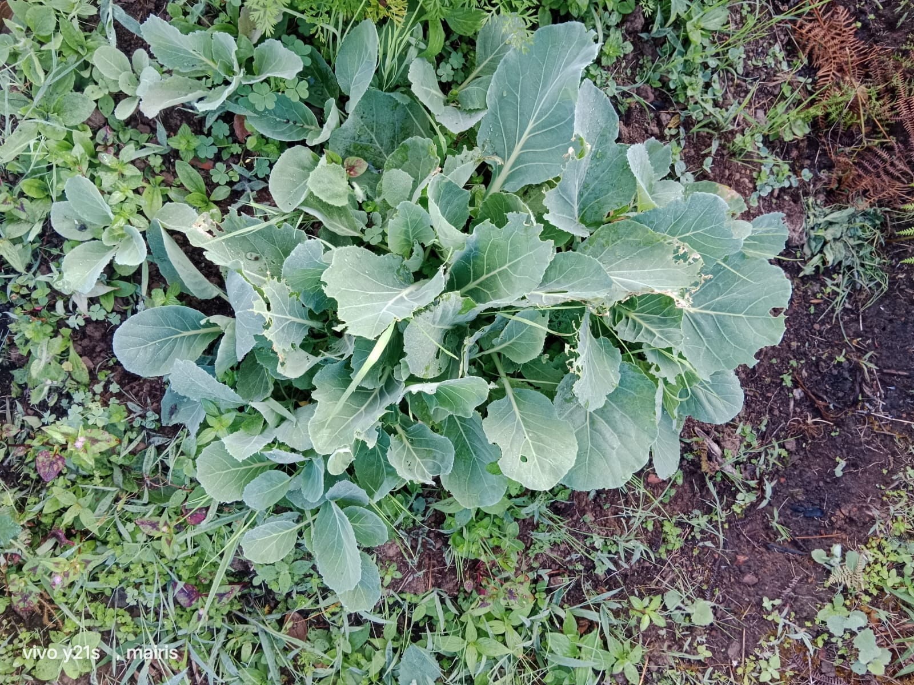
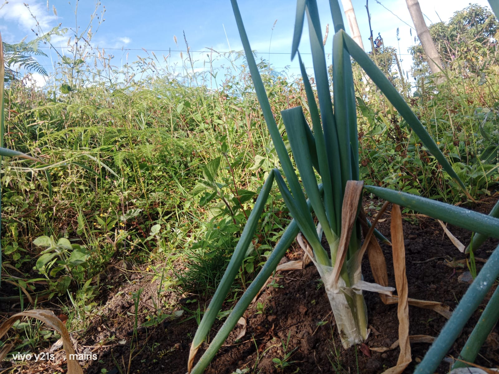

Conjuntos de actividades y tecnicas dedicadas al cultivo de la tierra para la obtencion de productos vegetales,como alimento, fibras y otros recursos, con el fin de satisfacer las nesecidades humanas y de los animales.
Se da a conocer el trabajo de el campesino poco a poco , se vasa en las cosas mas importantes.

contiene proteinas, carbohidratos complejos, fibra, hierro, acido folico, vitaminas del complejo B, potasio y zinc.
📍 vereda: cabicera de santa barbara

La arveja, también conocida como guisante o chícharo, es una leguminosa de la especie Pisum sativum. Se trata de una planta herbácea que produce vainas que contienen semillas esféricas, las cuales son consumidas tanto frescas como secas.
📍 cabicera de santa barbara

El cilantro es una hierba aromática anual, perteneciente a la familia de las Apiáceas, conocida por sus hojas y semillas que se utilizan en la cocina. Las hojas, de sabor fresco y ligeramente cítrico, son populares en diversas gastronomías, especialmente en América Latina y Asia, donde se utilizan para sazonar salsas, ensaladas, carnes y sopas
📱 +57 320 123 4567
📧 dulcestradiciones@yahoo.com

El repollo es una hortaliza rica en fibras y antioxidantes que reducen la absorción de grasa de los alimentos y evitan la oxidación de las células de grasa, ayudando a disminuir los niveles de colesterol "malo" en la sangre.
📍 llano de palmas

La cebolla, o Allium cepa, es una hortaliza bienal perteneciente a la familia de las liliáceas, conocida por su bulbo comestible.
es una especie de planta fanerogama perteneciente a la familia de las solanaceas
sembrar de a 4 papas , atierrar , en 8 dfias esta empesando a florecer .
Es tando en los 3 meses se fumiga para que no se gotee y se llele y que la cenicilla no lo queme .
en los 3 mese y medio se abona y se aporca y se desllerva .
se mantiene limpia para que pueda cojer el abono y en estado de 8 mese florece .
la papa hasta que no se seque por total no se puede sacar es decir que hasta que no cumpla 12 meses no pueden sacar.
Conoce todo el proceso desde el cultivo hasta el producto final. Incluye degustación.
Participa en el corte de caña y todo el proceso de elaboración. Llévate tu propia panela.
Aprende a hacer melcochas, alfandoques y otros dulces tradicionales con panela.